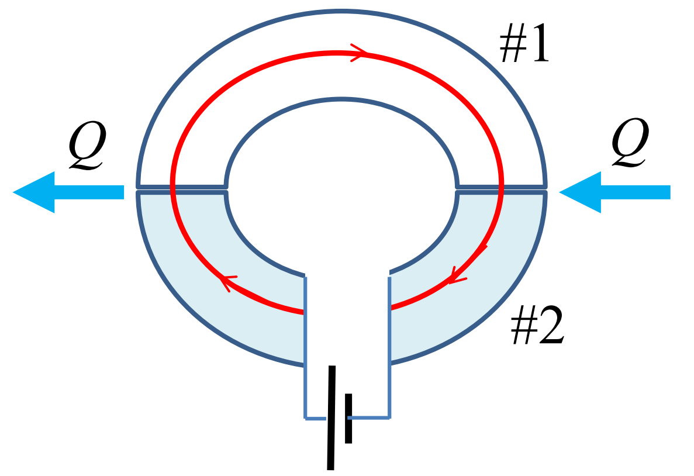
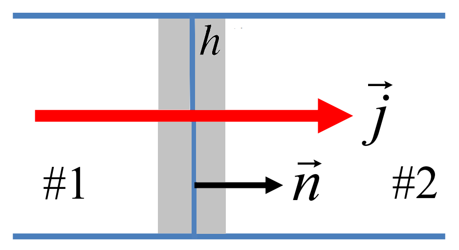
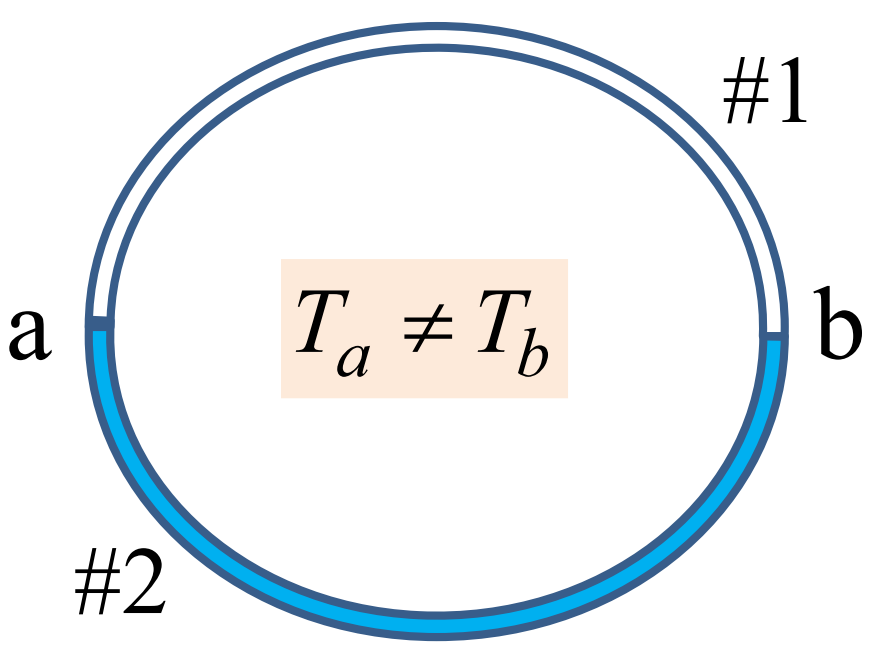

Termoelektrilised ja termogalvanomagnetilised nähtused
Contents
3.7. Termoelektrilised ja termogalvanomagnetilised nähtused¶
3.7.1. Termoelektrilised nähtused: üldine käsitlus¶
Alustame eeldusest. Olgu vaatluse all
Homogeenne elektrijuht. Homogeense elektrijuhi korral ei sõltu keemiline potentsiaal ruumikoordinaatidest.
Süsteem on isoleeritud.
Süsteem asub mittetäielikus termodünaamilises tasakaalus ning seal kulgeb statsionaarne mittetasakaaluline protsess, mille põhjuseks on ajas muutumatu temperatuuri gradient \(\nabla T \neq 0\) ja elektrostaatilise välja potentsiaali gradient \(\nabla \varphi \neq 0\).
Eespool tehtud eeldustel kulgeb süsteemis statsionaarne vool. Isotroopses süsteemis on voolutihedusel \(\mathbf{j}\) kaks komponenti
seoses välja potentsiaali ja temperatuuri gradientidega. Siin \(\alpha\) on koskkonda eseloomustav parameeter. On näha, et isegi kui vool puudub \(\mathbf{j}=0\) saab elektriväli olla nullist erinev \(\mathbf{E}\neq0\).
Süsteemis eksisteerib ka energiavoo tihedus
kus \(\beta\) on keskkonda iseloomustav parameeter ja \(\gamma\) on soojusjuhtivustegur. Esimene liige tekib siin seoses nullist erineva elektrivälja potentsiaali gradiendiga, teine liige seoses soojusjuhtivusega ja viimane liige viitab sellele, et iga laetud osake toob endaga kaasa energia \(e\varphi\).
Energiavoo tihedus on seotud varem toodud soojusvoo tihedisega \(\mathbf{J}^Q\) avaldisega
kus viimases võrduses on arvestatud, et vool on statsionaarne.
Meid huvitab entroopia muutumise kiirust (vt Soojusjuhtivus)
Erinevalt võrrandist (3.19) on siin soojusallikate intensiivsuseks Joule’i soojus \(\sigma^Q=\mathbf{jE}\). Kasutades (3.26) saame
Selleks, et viimane avaldis oleks kooskõlas üldise seosega (3.20) valime termodünaamilisi jõusid, voogusid ja kineetilisi koefitsiente järgnevalt
Onsageri teoreemist järeldub, et \(L_{12}=L_{21}\), ehk
See seos ei ole triviaalne, kuna koefitsiendid \(\alpha\) ja \(\beta\) olid meil sisse toodud täiesti sõltumatult. Leitud seos võimaldab kirjutada
3.7.2. Peltier’ efekt¶
Pildil on seletatud Peltier’ efekti (1834) sisu: kahest erinevast juhist (\(\#1\) ja \(\#2\)) koosnevas kontuuris soojuse eraldumine ühel (vasakul) kontaktil ja neeldumine teisel (paremal) kontaktil Joule’i soojuse kõrval, kui juhtide kontuuri läbib statsionaarne vool (punane nool). Temperatuur hoitakse ühesugusena kogu kontuuris.
{kind=link}
Vaatleme ühe kontakti, mille paksus on \(h\) ja eralduspinna normaalisuunaline ühikvektor on \(\mathbf{n}\), vt. pilti.
{kind=link}
Lähtekohaks on pidevuse võrrand (3.19) soojusenergia jaoks. Peltier’ efektis on oluline soojuse neeldumine/eraldamine peale Joule’i soojust. Seega Joule’i soojusega seotud allika \(\sigma^Q=\mathbf{jE}\) jätame pidevusevõrrandis kõrvale
Korrutame nüüd mõlemad pooled läbi \(h\) ja läheme piirile \(h\to0\). Selles piirprotsessi muutub paks kontakt eralduspinnaks ja me saame
kus \(Q_\Pi=\lim\limits_{h\to0} h \frac{\partial q}{\partial t}\) on Peltier’ soojus, mis on ajaühikus kontakti pindalaühikul eraldav või neelav soojushulk, ja \(\mathbf{J}^{Q}_{1,2n}=\mathbf{J}^{Q}_{1,2}\mathbf{n}\).
Kasutades (3.26) ja (3.28) avaldame
Kuna temperatuur hoitakse konstantsena võrdub teine liige nulliga, seega \(\mathbf{J}^{Q}_{1,2n}=\alpha Tj_n\), kus \(j_n=\mathbf{jn}\), ja
Kordajat \(\Pi_{12}\) nimetatakse Peltier’ koefitsiendiks ning see on määratud kontaktis olevate juhtide karakteristikutega. Saadud tulemus näitab, et Peltier’ soojus on võrdeline juhtide eralduspinda läbiva voolutihedusega ja sõltub juhtide erinevusest. Tasub mainida, et Joule’i soojus on võrdeline \(j^2\) ja ei sõltu voolu suunast, kuid Peltier’ soojust on voolu suunast sõltuv. Seega ühel kontaktil eraldub Peltier’ soojus, teisel aga neeldub.
3.7.3. Seebecki efekt¶
Seebecki efekti (1821) saab sõnastada järgmiselt: kahest erinevast juhist koosnevas kinnises kontuuris tekib elektromotoorjõud, kui juhtide ühenduskohti hoitakse erinevatel temperatuuridel.
{kind=link}
Lähtume siin võrrandist (3.25), kus \(\mathbf{E}=-\nabla\varphi=0\). Kirjutame võrrandi kujul
kus \(\mathbf{E}_T\) on tempretaruuri gradiendile vastav fiktiivse elektrivälja tugevus.
Kinnise lineaarse kontuuri korral saame kirjutada termoelektromotoorjõud
kus \(\mathrm{d}\mathbf{s}\) on kontuuri elemendi vektor. Kui \(\alpha_2-\alpha_1\) ei sõltu temperatuurist, siis
Näeme, et elektromotoorjõud on võrdeline kontaktide temperatuuride vahega, mis ongi Seebecki efekt.
3.7.4. Thomsoni efekt¶
Thomsoni efekt (1851) seisneb spetsiifilise soojuse eraldumises või neeldumises juhis, kui seal on olemas nii statsionaarne vool kui ka nullist erinev temperatuuri gradient. Kui üks neist faktoritest puudub, siis Thomsoni efekt ei realiseeru.
Efekti seletamiseks lähtume pidevuse võrrandist (3.19), kus \(\sigma^Q=\mathbf{jE}\), ja võrrandist (3.29). Sel juhul on pidevuse võrrandil kuju
kus peidetud liikmed sisaldavad tavalist soojusjuhtivusega seotud panust ja Joule’i soojust. Viimane liige kirjeldab aga spetsiifilisi termoelektrilisi efekte. Kui \(\alpha\) sõltub ruumikoordinaatidest ainult temperatuuri kaudu, siis \(\nabla \alpha=\frac{\mathrm{d}\alpha}{\mathrm{d}T}\nabla T\). Seega sisaldab pidevuse võrrand soojusenergia jaoks ajaühikus neelduva või eralduva erilise soojushulga
Soojust \(Q_\tau\) nimetatakse Thomsoni soojuseks ja kordajat \(\tau\) Thomsoni koefitsiendiks. Nagu on näha ei võrdu Thomsoni soojus nulliga, kui nii voolutihedus \(\mathbf{j}\), kui ka temperatuuri gradient \(\nabla T\) on mõlemad nullist erinevad. Paneme ka tähele, et Thomsoni soojus on võrdeline \(\mathbf{j}\), seega sõltub Thomsoni soojus voolu suunast.
Ülesanne
Voolutiheduse avaldises \(\mathbf{j}=\sigma^{c}\nabla \varphi-\sigma^{c}\alpha\nabla T\) oleva koefitsiendi \(\alpha\) temperatuurisõltuvuse võib vähemalt põhimõtteliselt teha kindlaks mõõtes Thomsoni koefitsiendi temperatuurisõltuvust ning avaldades siis \(\alpha\) Thomsoni koefitsiendi kaudu. Leidke see avaldis.
3.7.5. Termogalvanomagnetilised nähtused: Nernsti efekt, Righi-Leduci efekt ja Ettingshauseni efekt¶
Vaatleme olukorda, kui süsteemis on tekitatud nullist erinev temperatuuri gradient \(\nabla T\neq0\), elektrivälja potentsiaali gradient \(\mathbf{E}=-\nabla\varphi\neq0\) ja lisaks on rakendatud nullist erinev magnetväli \(\mathbf{H}\neq0\). See üldistab eelpool kirjeldatud füüsikat magnetvälja olemasoluga.
Antud olukorras kehtivad meil korraga võrranditega (3.25), (3.24) ja (3.28) antud erijuhud
Me tahame arvestada nii termoelektrilisi efekte, kui ka Halli efektiga seotud füüsikat. Seega peame toodud võrrandeid üldistama. Kaht esimest seost üldistame järgmiselt
On selge, et Halli panus arvestab elektrilise välja potentsiaali gradienti magnetväljas. Viimane liige arvestab aga temperatuuri gradienti magnetväljas ja see põhjustab Nernsti efekti. Efekt seisneb selles, et indutseeritakse lisaks elektrivälja komponent, mis on suunatud temperatuuri gradiendi ja magnetväljaga risti. Efekti iseloomustab süsteemi karakteristik \(N\).
Soojusvoo tiheduse võrrandi üldistame nii
Siin kolmas panus kirjeldab Ettingshauseni efekti. Nähtust võib interpreteerida kui magnetvälja mõju Peltier’ efektile. Paneme ka tähele, et selle panuse kordaja \(NT\) on kooskõlas Onsageri teoreemiga. Viimane liige kirjeldab aga Righi-Leduci efekti, mida võib tõlgendada Halli efekti analoogiks soojusjuhtivuses. Siin on \(L\) vastav süsteemi parameeter.